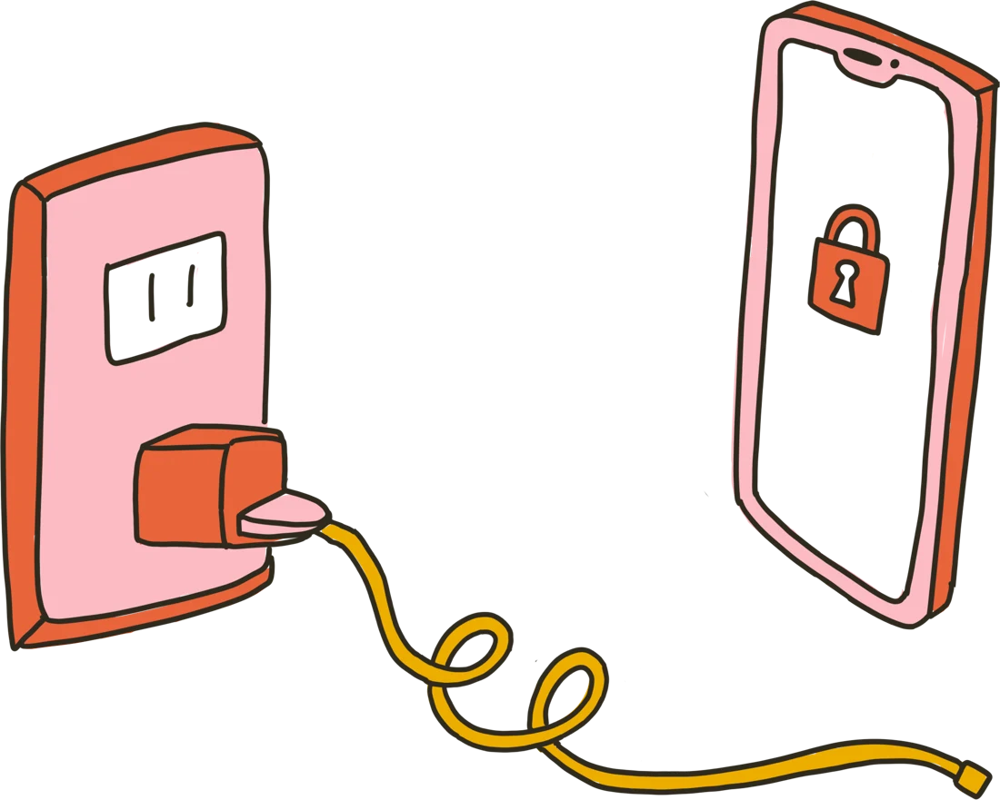
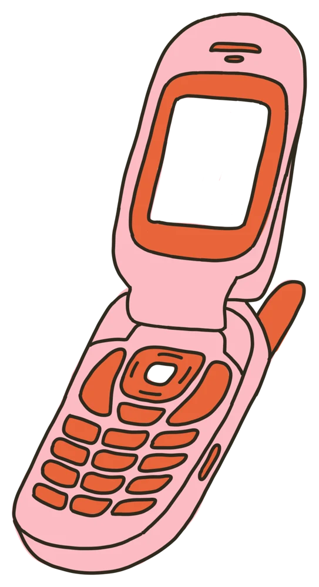

Keep your essentials.
Set up your app boundaries. Keep useful tools available, with calls and texts still getting through.
FOR A LIFE BEYOND YOUR SCREEN
Your phone is useful.
The endless scrolling? Less so.
Meet the iPhone app blocker that turns your charger into a boundary. Plug in to scroll. Unplug to get back to life.
Download for iPhoneFor iPhone · iOS 18+ · Free download, in-app purchases

a little less connected.A SMALL BOUNDARY. A DIFFERENT DAY.
No need to give up your smartphone.
Just give distracting apps a place to live.
Set up your app boundaries. Keep useful tools available, with calls and texts still getting through.
Connect your charger when you want access to distracting apps. Start a timed session and check in intentionally.
Unplug your phone or let the timer end, and distracting apps lock again. Your attention has somewhere else to be.

SMART PHONE.A LITTLE OLD SCHOOL. IN A GOOD WAY.
All the things you need.
Less of what pulls you away.
You don’t have to delete every app or buy another phone. Make room for the walk, the book, the conversation, the thing you keep meaning to do.
Make your iPhone a little simpler ↗NOTES FOR YOUR OFFLINE ERA
Practical ideas for a little
more space from your screen.
BEFORE YOU UNPLUG
Unplug Me is an iPhone app blocker that uses your charger as a boundary around distracting apps. Plug in to unlock them for a timed session. Unplug, or let the session end, to block them again.
Calls and texts remain available while distracting apps are blocked. During setup, choose the everyday tools you want to keep available, such as maps, music, or your camera.
The app uses your phone’s charger as the physical boundary. You do not need to buy a dedicated blocking device.
Unplug Me includes emergency unlocks. The current App Store description lists four per week and a one-minute wait when those run out. Check the app for the options available in your version.
Unplug Me is free to download and offers in-app purchases. See the App Store and the in-app purchase screen for current plans and prices.
Unplug Me is designed for iPhone and requires iOS 18 or later. It uses Apple’s Screen Time API for app blocking.
For setup details, read our guide to charger-based blocking. For developer support, open the App Store listing and follow its App Support link.
THERE’S A WHOLE WORLD OUT THERE
Your next chapter probably isn’t in your feed.